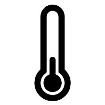

While you’re adjusting to your new environment, it is natural to experience Culture Shock, which is a feeling of disorientation when abruptly subjected to a foreign way of life. There are 4 phases to Culture Shock: Honeymoon, Anxiety, Adjustment, and finally Acceptance. During this period, you may experience symptoms such as feelings of helplessness and withdrawal.
Val, Vietnam | Industrial Design
I often feel lonely, but I have my problem is that the people I can hang with don't work too often and play games too much. And I don't know if I'm like a workaholic, but I tend to isolate myself after a period into the school year because I like to focused and be reserved. Most of the times I think it's because I'm not with my family, I dont have a home here, and I'm surrounded my various versions of myself and I dont like that. Usually by mid term I'd have grown sick of people's surrounding me everyday and everywhere. I think it's terrifying. University is a weird place and dormitory is a weird phenomenon. The many failed attempts to assimilate has brought me to believe I don't belong and often I feel sad about it. I just work on my stuff a lot to be emotionally stable. It's not healthy, but you know, you just do.
mood swings, disrupted sleep patterns, homesickness
Kirthank Manivannan, Japan | Graphic Design
There was one time I saw something that reminded me of convenience stores at home, and I started to miss home. It only lasted for a short while so I didn't have to do anything to overcome it.
, getting stuck in routines, and even hostility towards host nationals.
Volf, India | Interior Architecture Graduate
People hardly hangout, never thought it would be so hard to chill and feel fine about staying elsewhere (may sound casual but it means a lot).
Many students are emotionally attached to events back home
Angel, Thailand | Film Animation Video
When the king of thailand passed away, it was awkward because we were all sad and our home country was sad but no one here understood what we were going through. We weren't offended but it was when I remembered again that we are really international.
and feelings of loneliness can be triggered by a sense of dissociation from cultural customs, food, and festivals.
Shivangi Gupta, India | Furniture Design
I think I get really sad during the time of Indian festivals a lot, they are such big part of lives back home and not even being able to acknowledge them here made me really sad and alone but I just try to celebrate in whatever small way I can with my friends.
Depending on your background, you may also feel frustrated with language barriers
Yasemin Orhan, Turkey | Film Animation Video
The language barrier became an issue for me freshman and sophomore years. The american slang has a huge influence in social interaction and the conversations happen quick and snap. When you are thrown out of it by a word as an international you experience a very concrete discomfort. I was personally not very upforward at these situations in the beginning of my experience in risd(in us in general). therefor there were times when i lost connection in a conversation or was basicly thrown out of an ongoing one among friends and was even mocked about while i was present in the place (this took place in brown actually) out of these experiences i learned my lesson that i actually just had to ask stuff like words, sayings, phrases straight up so that i could just basically learn and gain a linguistic competence.
on top of adjusting to the habits of American social interaction. Some things can only be learned the hard way through courage and practice
Priscilla Yuen, Malaysia | Illustration
Found it difficult to verbally articulate my thoughts in conversations, leading to a dip in confidence, and struggle to form bonds. Still working on overcoming it, I found that it helps when classmates understand what's going on, instead of keeping it to self. Differences in cultures and manifestation are not immediately apparent unless discussed/mentioned.
, but you should always give yourself time and have faith in your progress.
Unfortunately, the intense studio culture at RISD comes with its own unique set of problems. For instance, you may encounter relationship issues.
Ishaan Bose Verma, India | Graphic Design
Had a severely bad break-up that pretty much winded me. Nothing helped except time.
, question your identity
Will, Taiwan | Industrial Design
Mostly seeing how open people are open to their sexuality and expression of gender identity that surprises me since it's a sensitive subject for me somewhat, and while seeking religion to understand the other-side of things but ultimately finding more conflict of sorts. It's pretty much an uphill battle of being content vs being jealous of what I don't have, but I overcome it by seeing the bright sight of things and being aware of how amazing it is that we are all so different.
, feel pressurized by work

T., Canada | Industrial Design
sophomore year, fall. courses were very heavy and felt very stressed from the load. at the same time, during that time, i just broke up with my boyfriend. Felt like I didnt belong in the major. realised that getting straight As isn't a huge deal (but honestly I still feel this stress) and time got me over him.
, be constantly sleep-deprived
Hazel Chan, Hong Kong | Graphic Design
Not being able to sleep because of work and being stressed out about it, trying to time manage better but it still happens sometimes.
, and get into disagreements with your professors.
Syrena Li, China | Illustration
It was very tough first I got here. It was hard to make really close friend and blend into others. I force my self really hard to social everyday, but I am not actually an extroverted person. I push myself too hard, and I can't get good rest. I gave myself a lot of pressure. I always want to get A as a way to prove my hard work. If professor don't like my work , I would be really upset and blame myself for not working hard enough. However, now I realize that I am doing artwork for myself, even its for customer, I should still have my own voices in it. My aim should not be satisfying everybody, but myself. I realized that I am still in the process of study, and probably will be forever . Giving myself too much pressure and judging my work based on professors opinion often leads to negative mood. I was super frustrated once because my freshman professor don't like my working style and thought I was wrong. It turns out that I am doing well now in my department and I feel more comfortable too.
Unexpected emergencies are also a part of life and can be unnerving to handle for the first time.
Haejung Choi, Korea | Graphic Design
one time i was in a emergency situation and i didn't know where to go so i asked the public safety if they can take me to the hospital, but they refused because i live off campus. i was really shocked .. but my boyfriend (also international student) helped a lot to comfort me.
The best way to deal with these is to find a strong group of friends who can offer support, and keeping in touch with friends and family back home also helps alleviate emotional stress.
Javier Syquia, Philippines | Freshman Foundations
The biggest emotional issue I've had at RISD is missing home and talking to my friends and family on a regular basis. I eventually overcame this by simply calling up my friends and family and keeping in touch with them regularly; although it was very hard in the beginning, I eventually found my place in RISD by meeting a good group of friends which allowed me to build a good support system here at RISD.
RISD Public Safety, Residence Life, the Office of International Student Services (OISS), as well as Counseling and Psychological Services (CAPS) are also great sources of help; don’t be afraid to approach them with any query or need. With patience and guidance, you will overcome many problems and gain valuable experience to move forward in college.